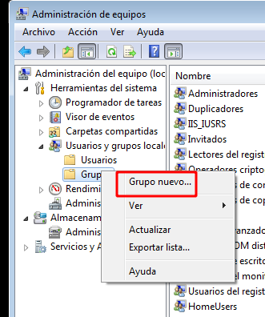
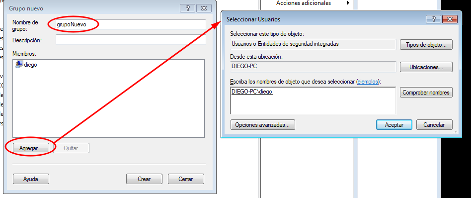
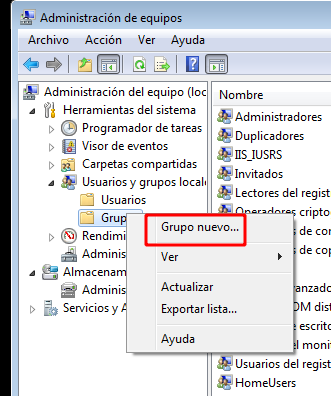
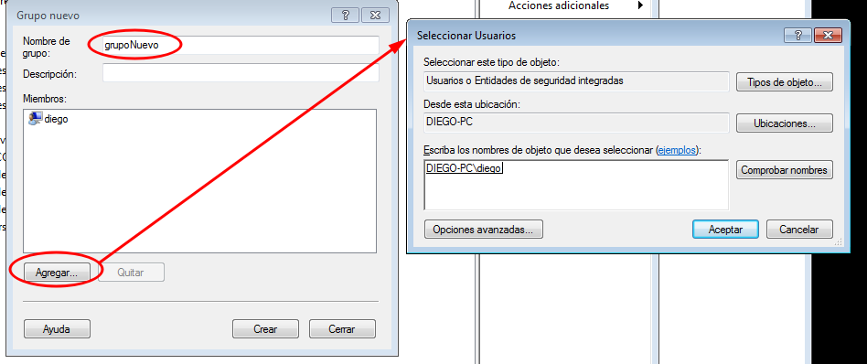

Grupos en Windows
Para crear un grupo en Windows debemos ir al administrador de equipos, al apartado usuarios y grupos, de la siguiente forma:  
Para crear un grupo en Windows debemos ir al administrador de equipos, al apartado usuarios y grupos, de la siguiente forma:  